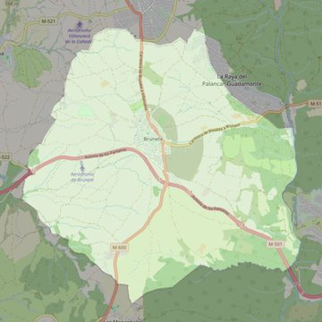

Nuestra Señora de la Asunción
- Arciprestazgo
- Villaviciosa de Odón
- Población
- Brunete
- Dirección postal
- Pza. de la Iglesia, 4
- Código postal
- 28690
- Extensión
- 49,20 km² (4.920 ha)
- Teléfono
- 918 640 134
- Correo electrónico
- parroquia_brunete@yahoo.es
- Información demográfica
- De la parroquia · De la población (Brunete) · Del arciprestazgo (Villaviciosa de Odón)


Descargar mapaLímites según decreto
Los del término municipal
Desarrollos urbanísticos previstos
- Brunete: nuevos sectores: 17.500 viviendas · previsión a 2030-2045
Las cifras y sus fuentes están en la ficha de cada desarrollo, en la sección «Previsión de desarrollos urbanísticos».